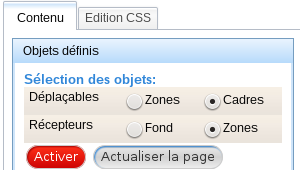
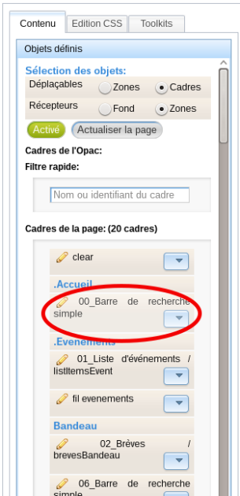
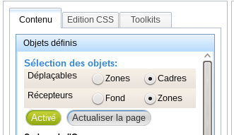
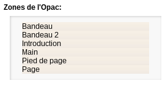

Déplacer des objets
Le portail de PMB permet de déplacer avec sa souris les cadres dans les zones de votre page.
Les zones peuvent aussi être déplacées à l'intérieur des pages.
Truc & astuce
Lorsque vous déplacez des zones, cela s'applique à tout le site.
Si vous souhaitez structurer les zones de vos pages de manières différentes à l'intérieur de votre portail, utilisez le système des vues OPAC.
Déplacer un cadre dans les zones⚓
Procédure
Pour déplacer un cadre du portail, il faut être dans le menu Portail > Construction : Construire.
Affichez dans la zone de visualisation la page qui contient votre cadre.
Vous avez deux méthodes pour accéder à la page qui contient votre cadre :
dans la zone de visualisation, déplacez vous dans le portail jusqu'à atteindre la page qui vous intéresse (pour les pages du portail ou OPAC),
dans la zone de gauche, cliquez sur le volet
Pageset cliquez sur le nom de la page qui contient votre cadre (uniquement pour les pages du portail).
Dans le volet
Objets définis, choisissez l'objet à déplacerCadreet son récepteurZones.Sélections des objets Cliquez sur
Activer.Choisissez le cadre à déplacer en cliquant sur son nom.
Les cadres déplaçables sont les cadres de l'OPAC et les cadres du portail.
Le cadre sélectionné sera entouré d'un liseré rouge pour le repérer dans la zone de visualisation.
Déplacez le cadre sélectionné en utilisant le système du glisser-déposer.
Un rectangle bleu vous indique où se placera votre module après avoir lâché le clic de votre souris.
La zone qui recevra le cadre est grisée.
Après avoir déplacé votre cadre, n'oubliez pas d'enregistrer.
Truc & astuce
Si vous n'êtes pas satisfait de votre déplacement et souhaitez revenir en arrière, utilisez le bouton
Actualiser la pageà la place du boutonEnregistrer. La page se rechargera au dernier enregistrement effectué, c'est-à-dire avant le déplacement malencontreux.Remarque
Un clique sur le bouton
Activerpermet d'afficher également tous les cadres non présents sur la page. Cette manipulation est symbolisée par un boutonVoirse mettant en vert dans la listeCadres hors de la page.
Déplacer une zone dans le portail⚓
Procédure
Truc & astuce
Même s'il est possible de déplacer les zones, nous vous conseillons de les activer/désactiver dans l'onglet Administration et de fixer leur position en utilisant la feuille de style de votre portail.
Pour déplacer un cadre du portail, il faut être dans le menu Portail > Construction : Construire.
Dans le volet
Objets définis, choisissez de déplacer les objetsZonesdans le récepteurFond.Activez le déplacement en cliquant sur le bouton
Activer.Choisissez votre zone à déplacer dans la partie
Zones de l'Opac.Zones de l'Opac Comme pour le déplacement des cadres, un liseré rouge apparaîtra autour de la zone sélectionnée.
Déplacez votre zone en utilisant le glisser-déposer.
Enregistrez votre nouveau placement.